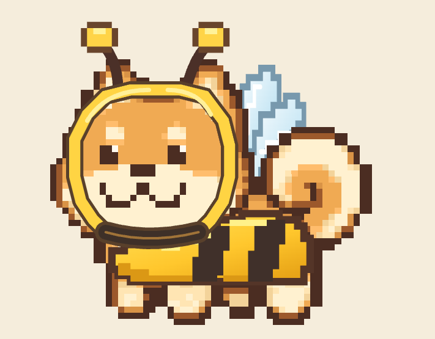
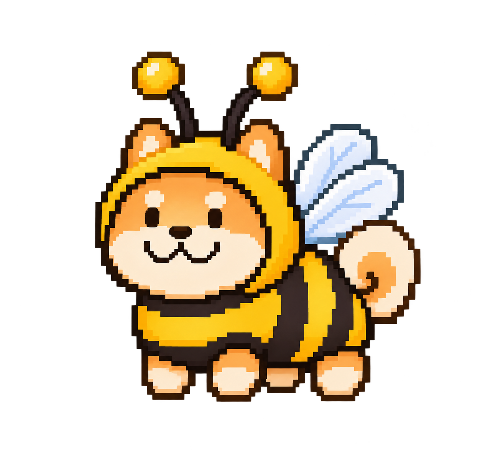

Bee costume comparison
Compare the original concept with an actual app screenshot and a replacement-art candidate. These are static images; this page does not test animation or in-app fitting.
Original concept
Current app

Replacement candidate

Images selected here stay on this computer. Repeat with standing and sitting screenshots and art; verify the final result in the app before approving it.